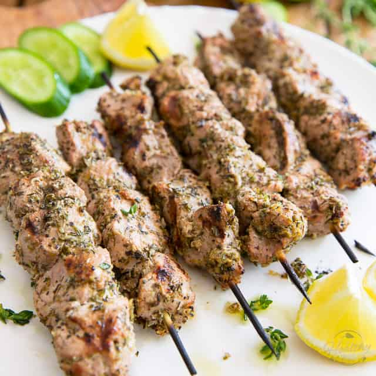

Lamb Souvlaki

Description
Souvlaki is a Greek specialty made with tender cuts of meat.
In this pork kebab recipe, the meat is marinated in a lemony olive oil mixture.
Serve with rice pilaf and a Greek salad.
Ingredients
- 1 lemon, juiced
- ¼ cup olive oil
- ¼ cup soy sauce
- 1 teaspoon dried oregano
- 3 cloves garlic, crushed
- 4 pounds pork tenderloin, cut into 1 inch cubes
- 2 medium yellow onions, cut into 1 inch pieces
- 2 green bell peppers, cut into 1 inch pieces
- skewers
Steps
- In a large glass bowl, mix together lemon juice, olive oil, soy sauce, oregano, and garlic; add pork, onions, and green peppers, and stir to coat.
Cover, and refrigerate for 2 to 3 hours.
- Preheat grill for medium-high heat.
Thread pork, peppers, and onions onto skewers.
- Lightly oil grate.
Cook for 10 to 15 minutes, or to desired doneness, turning skewers frequently for even cooking.